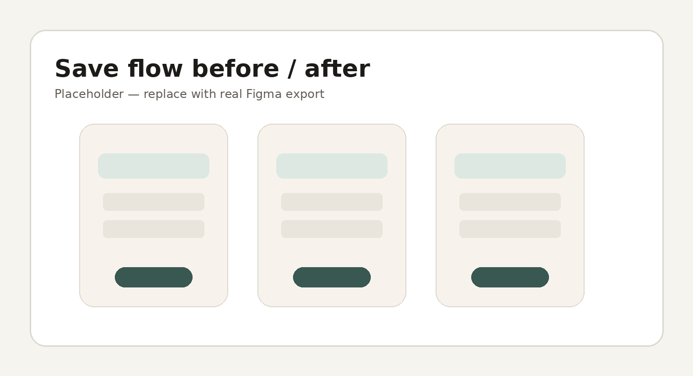
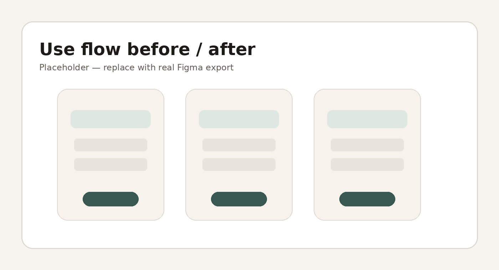

Audited product guidance
Reviewed 10 PXFN document resources and 18+ differentiating product experiences to deeply understand the reasoning behind each compliance decision — not just what was approved, but why.
Case Study · Meta Pay Autofill · Content Design
Redesigned the save and use payment experiences to be security-forward and user-first — cutting disclosure copy nearly in half, streamlining compliance review, and building a reusable framework for future experiments.
Research Foundation
What UXR told us
How this shaped the approach
Security-forward over convenience-forward — lead with encryption and control, not speed.
Preferred terminology · N=198
The save prompt emphasized compliance over the user — dense, passive, and missing the security reassurance users actually needed.
What I Did
Reviewed 10 PXFN document resources and 18+ differentiating product experiences to deeply understand the reasoning behind each compliance decision — not just what was approved, but why.
Shifted from compliance-first to user-first framing throughout. Built proposals around what UXR told us users actually needed to feel secure and confident.
One framework covering all variants: vault/non-vault, US/ROW/EU/GDPR, across Android and iOS. Around 57 strings tracked across the surface in 6 variant combinations.
Key Changes
Four of the highest-impact content updates across the save experience.
“Save card for next time?”
Neutral question — no value prop.
“Save card for faster checkout?”
Transactional → value-driven.
Not present in original
No trust signal at the moment of save.
“Your info will be encrypted and securely saved.”
Added to directly address users’ top concern.
“By tapping Save, this information, including your CVV, will be saved and synced with Meta Pay, where it can be managed. Meta's payment Terms and Policies apply.”
63 words — passive voice, heavy legal jargon.
“Tapping Save saves your info (except CVV) in Accounts Center, where you manage it. Meta's payment Terms and Policies apply.”
26 words — active voice, direct and clear. 58% reduction.
“Save”
Functional, but did not add to trust.
“Save securely”
Adds trust reinforcement at the moment of action.
The existing language had three problems: passive where users needed agency, compliance-forward where users needed reassurance, and twice as long as it needed to be. The direction: active voice, lead with encryption and control, give users the action — not just the disclosure.
Before & After
Left: original save prompt. Right: Variant 1 new card visual and Variant 2 security messaging.

Impact
~140 → ~75 words, same compliance coverage
63 → 26 words in the footer alone
Manage, Settings, Recommendations — all roughly halved
Additional outcomes
The CVV confirmation step was confusing and visually obscured the payment form — users didn't know what was being asked or why.
What I Did
Instead of per-experiment reviews, ran a single portfolio review — one set of reviewers, one decision log — covering all 4 Use flow experiment arms at once.
Secured approved language before any arm went live, eliminating the back-and-forth that typically delays launches.
Key Changes
Three targeted updates to clarify the CVV confirmation step.
“Confirm card to use autofill?”
Neutral question, did not tell users what to do.
“Enter CVV to use saved card”
Clear instruction, optimized from UXR.
Empty field, no placeholder
No visual cue for expected input length.
“Enter CVV” with dynamic dots by card type
Placeholder informs the user before keyboard appears.
“Confirm”
Vague — does not describe the action.
“Use saved card”
Cleaner, action-oriented, aligned with UXR preferred language.
Before & After
Left: control. Center: content + design change. Right: additional variants.

Outcome
Covered all 4 experiment arms — instead of 4 separate reviews
Verbal alignment 4/14, submitted 4/21, launch target 4/27